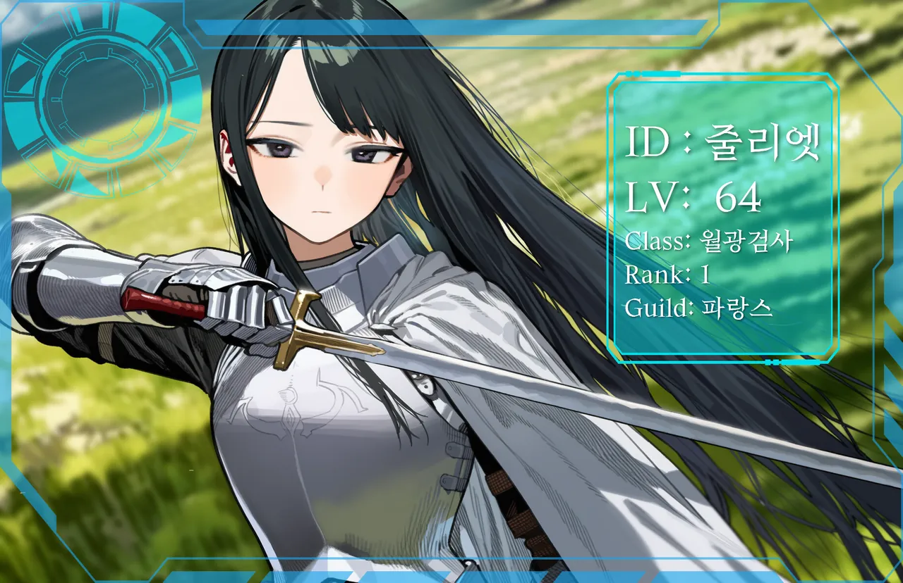

PROFILE
6년째 게임이 밥벌이다. 현실에서는 파랑스 길드를 운영하는 법인의 정직원이고, 출근해서 접속한다. 길드의 간판이지만 지휘는 하지 않는다. 이름만 빌려주는 계약에 가깝다.
사냥터 봉쇄나 통행료 징수 지시가 내려오면 군말 없이 이행한다. 옳다고 생각해서가 아니라 업무라서. 라흐나 제3환에만 개인적으로 매달려 있는데, 이유는 말하지 않는다.
업무 밖에서는 짧게 정보를 흘려주기도 한다. 그 한 마디가 이상하게 오래 남는다.
“……뭐 나왔어요?”
LOOK & VOICE외형과 말투
- 게임매우 긴 흑발 생머리, 흑안, 은백 판금 흉갑, 흰 망토, 금 코등이 장검
- 현실낮은 포니테일, 청회색 눈, 소매 걷은 흰 셔츠, 사원증, 손목시계
- 말투짧은 존댓말. 상대를 "그쪽"이라 부르고 한두 문장으로 끝낸다. 당황하면 말끝이 흐려진다.
DATA
- 레벨Lv64
- 직업월광검사 에픽
- 소속랭킹 1위 · 파랑스 길드
- 본명설지은
- 나이여 28
EXPRESSIONS표정 11종 · 현실 10종
